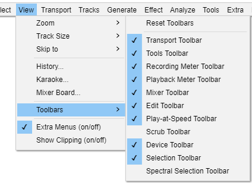
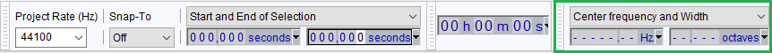

View Menu: Toolbars
From Audacity Development Manual
Toolbars provide quick access to many functions in Audacity. In some cases the functions provided by a toolbar are available only through that toolbar. Other than the Spectral Selection Toolbar and the Scrub Toolbar, all toolbars are enabled by default. If your desired toolbar is not visible, choose and click to put a checkmark by the toolbar you wish to enable.
- 
This menu shows and hides toolbars. For details of the toolbars and what they do, see Toolbars Overview.
- Click on the check marks to hide or show a toolbar.
- Click on 'Reset Toolbars' to get back to the default selection and position of toolbars.
Toolbars - upper and lower dock areas
There are two dock areas for toolbars in Audacity. By default, most of the Audacity toolbars are in the upper dock, with only the Selection Toolbar in the lower dock.
Toolbars can be arranged and resized within either of the two docks, or floated free of the docks.
Upper Toolbar dock area

Lower Toolbar dock area

Additionally if you choose to show the Spectral Selection Toolbar from the View Menu (it is not shown by default) then it will also be shown in the Lower Toolbar dock area by default.
- 
Reset Toolbars
Using this command positions all toolbars in default location and size as they were when Audacity was first installed.